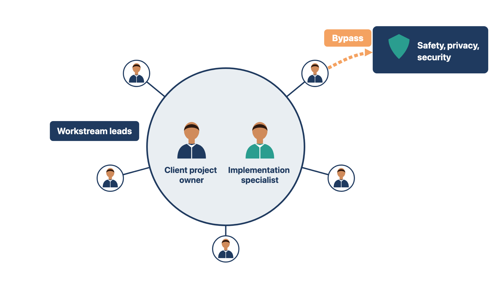
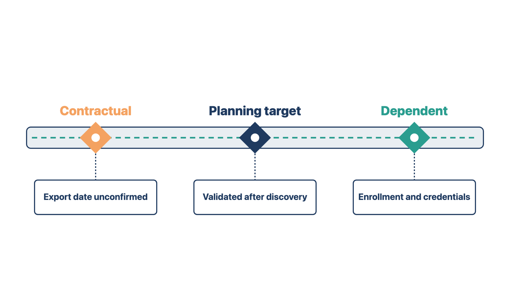
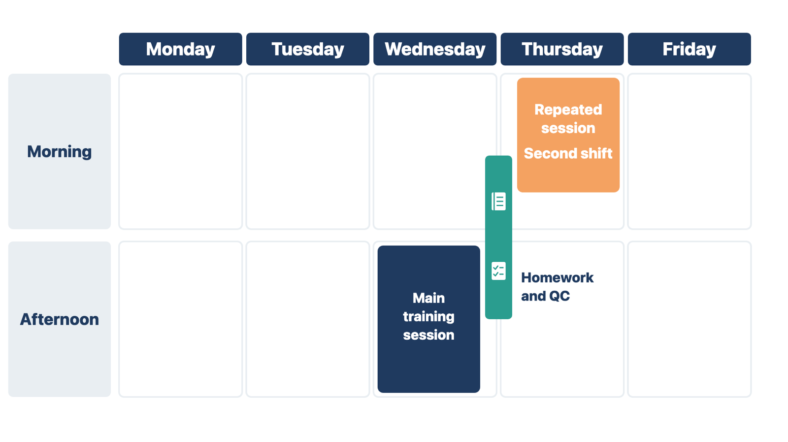
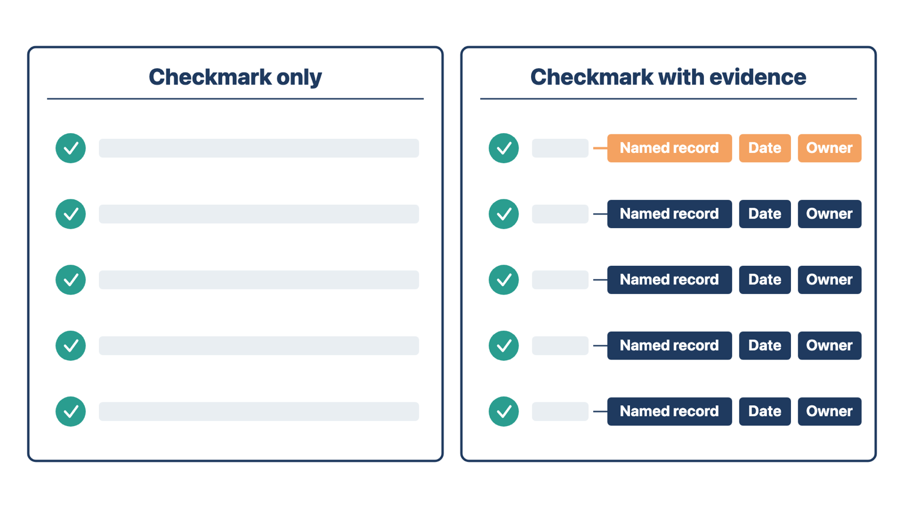

If people do not know who decides, decisions stall or the wrong person makes them. This section names each owner and a route around the usual chain for urgent concerns.
Introduce yourself and the contact for each active team. Explain what each person owns in plain words. Ask the client to confirm its sponsor, project owner, workflow decision-makers, data owner, training coordinator, and required approval roles.
Make the route clear:
Escalation means raising a concern to someone with more authority because it cannot wait or the usual route cannot settle it.
Do not say that every decision "comes through" one person if that blocks access to safety, compliance, or security authorities. Coordination needs a clear center. Escalation needs a clear bypass: a direct route to those authorities when a concern is urgent or needs independence.
Rule: Name one center for coordination and a direct bypass for urgent safety, privacy, and security concerns.
Compare two cases. At Cedar Point, a front-desk worker asks which form to use for new patients. That routine question goes to the client project owner, the center for coordination. At a family medicine clinic, a medical assistant sees that a former employee can still sign in to the new system. She reports it straight to the security contact, without waiting for the project owner. The shared rule: routine work goes through the center, and urgent safety, privacy, and security concerns take the bypass.

Check yourself
Clients plan staff, leases, and patient schedules around your dates. If they think a target date is a promise, they plan on a guess.
Share the preliminary roadmap, the plan of phases, milestones, and dates you built in Module 2. Show the order, major overlaps, milestones, client decisions, and gates (check points that must pass before work moves on). Do not bury the client in internal task detail.
Be direct about how firm each date is:
The client should know what makes each date possible and which actions could move it.
Rule: For every date, say what it is based on and what could move it.
Compare two cases. At one clinic the go-live date is in the signed order, but the old vendor has not set an export date. You call the date contractual and at risk. At another clinic the go-live date is only a planning target. You call it a target to be checked after discovery. The shared rule: the label tells the client how much to rely on the date.

Check yourself
Without agreed rules, records scatter, approvals go to the wrong person, and restricted data ends up in the wrong place.
Confirm:
Do not assume the client can use the vendor's internal project system. If you need separate internal and client tools, decide which record is the official one. Name who keeps the two in line.
Rule: Decide which record is official and who keeps any copies matching.
Compare two cases. At Cedar Point, your team and the client both use the client's shared project folder. You name it the official record, so no copy is needed. At a pediatric clinic, your team tracks tasks in the vendor's internal system, and the client uses a shared spreadsheet. You name the spreadsheet as official. You update your internal copy after each status meeting. The shared rule: one record is official, and a named person keeps any copy matching it.
Check yourself
Installation and training need people and rooms on a calendar. If you do not book them at kickoff, the dates slip while everyone waits.
Schedule the environment work first. An environment is a separate copy of the system, such as a test or training copy. Then set a training rhythm. This method prefers the same time each week, because a steady time helps attendance and planning. Use that as the default.
Confirm:
The same time every week may not work for a clinic with several shifts. Keep the rhythm another way. Use repeated sessions for each role, alternate approved times, or use recordings where policy allows. The goal is reliable attendance, not a fixed clock.
Ask about the clinic's busy periods too. Prefer a go-live date in the clinic's least busy period, such as outside flu season. You can suggest this; the clinic decides.
Rule: Keep a steady training rhythm, and adapt the time so every role and shift can attend.
Compare two cases. At one clinic, everyone works days, so Wednesday at 2:00 p.m. works for all. At another, one front-desk worker covers an evening shift alone. You add a repeated session she can attend. The shared rule: the rhythm stays; the time adapts to the shift.

Check yourself
A vague warning makes people worry but gives no one a task. A risk stated in a fixed form tells the client what to do and by when.
Review only the items that need the client's awareness, action, or authority. A dependency is work you cannot finish until someone else acts. State each risk, decision, or dependency in this form:
condition → possible effect → owner → next action → decision or due date
Example:
"The old vendor has not confirmed the test export. That could move conversion testing and the go-live target. The client data owner will contact the vendor today and update the project by Friday."
Rule: State every risk as condition, effect, owner, next action, and date.
Compare two cases. "Lab interface is a big risk" names no task. "Lab credentials are not issued; the March 9 interface date may slip; the lab contact requests them today and reports by October 20" gives a task, an owner, and a date. The shared rule: if no one can act on it, it is not finished.
Check yourself
Disagreement at kickoff is useful. It shows a wrong assumption while it is still cheap to fix. Keep each disagreement tied to a decision.
Do not settle a clinical, compliance, security, billing, or data question by a quick vote of people who lack authority.
If the client asks for a feature that does not exist or does not work as described, record the need. Answer after you check with the product team. Do not make up a product promise to keep the meeting comfortable.
Rule: Send each disagreement to the person with authority, with options and a date; never decide it by vote or promise.
Compare two cases. A billing manager and a nurse disagree about who enters diagnosis codes, and the medical director is absent. You record the options and assign the decision to the medical director with a date. At another clinic, a project owner asks whether the portal can book an interpreter, and you do not know. You record the need and answer after checking. The shared rule: the right person decides, with evidence, by a date.

Check yourself